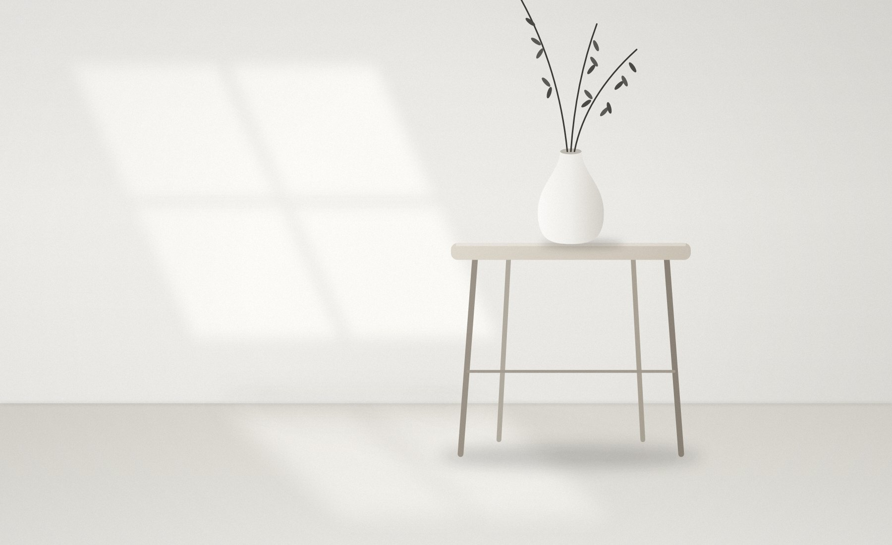
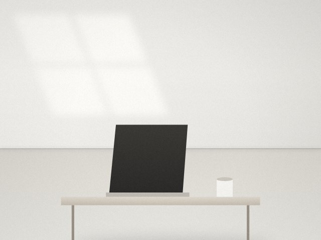
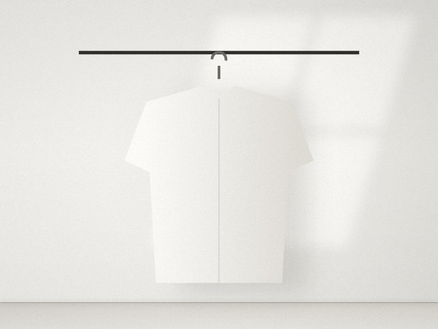
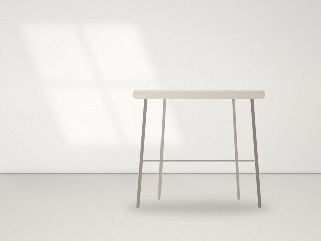
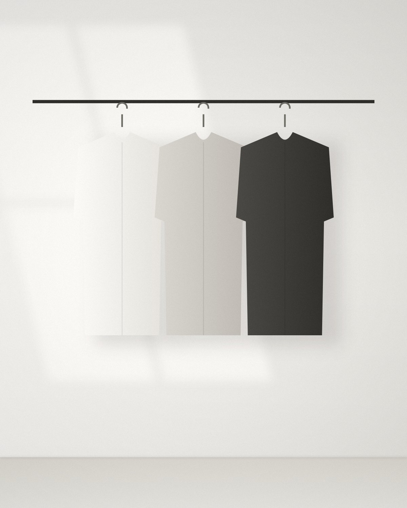
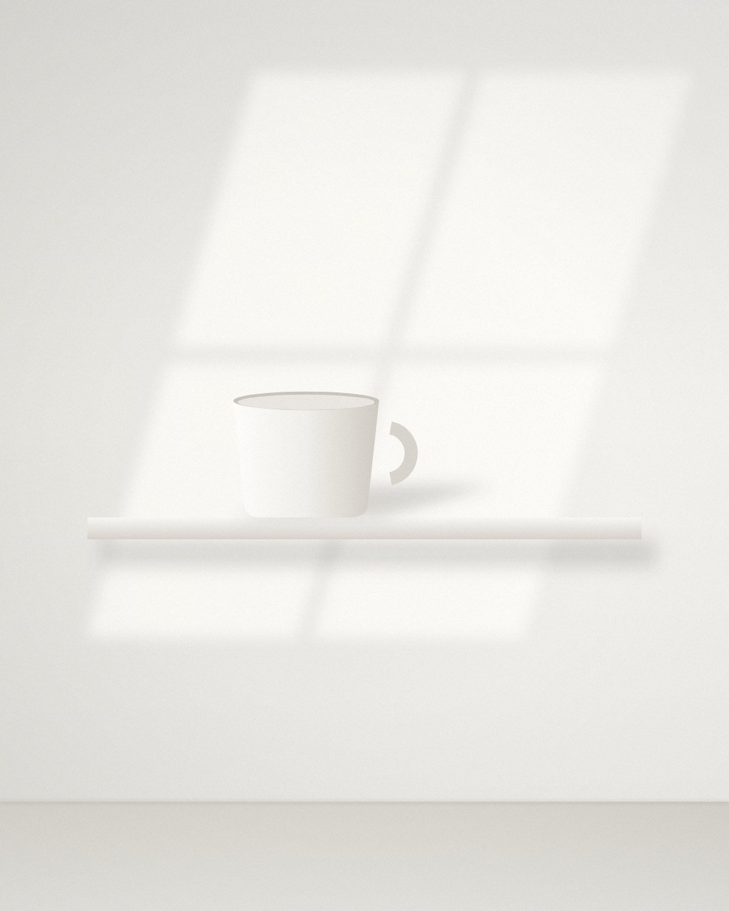

ミニマリストの情報を、
必要なぶんだけ。

Summary
いまのミニマリズム
- 「ゼロを目指さない」が主流に。全部捨てるより、管理が負担なものだけを減らす「ゆるミニマリスト」型が広がっている。
- モノから働き方・デジタルへ。仕事でも「何を手放すか」を考える「キャリアミニマリズム」や、使わないアカウントの整理が話題。
- 見せる部屋より、暮らしやすい家。「映え」より、自分らしく長く使えるものを選ぶ流れ。
Latest
新着トピック

2026.11.06来年の目標の前に「何を手放すか」を決める年末のキャリア振り返りは、追いかけるものより先に手放すものを決めよう、という提案。Forbes JAPAN
2026.11.05少ない道具を長持ちさせる使い方と手入れ数を減らした後は、残した台所道具やPCを傷めず長く使う視点へ。筆子ジャーナル- 2026.11.043年間毎日使うクッカーを愛用する理由1つの道具を多用途に使うミニマリストの定番の考え方。ミニマリストsoraのブログ

2026.11.02転勤族ミニマリストの「やめた家事」備え付け収納や大掃除を手放した実例。10月には5人のルームツアー記事も。goodroom journal- 2026.11ミニマリスト系YouTuberランキング、1位は登録者22万人1位「少ない物ですっきり暮らす」（22万人）、2位「ミニマリストしぶ」（21.4万人）。TOP30の83%が直近90日に投稿。インフルエンサーラボ
Themes

Types
Column
コラム
No.01部屋・インテリアミニマリストとは、物を減らす人ではなく「管理を減らす人」部屋が空っぽであることは、ミニマリストの条件ではありません。大切なのは、持ち物を管理する手間と気持ちの負担を減らすこと。最初に知っておきたい考え方をまとめます。 No.02片付け・断捨離何から手放す？ 後悔しにくい順番で進める片付け勢いで捨てて後悔するのは、たいてい「思い入れのあるもの」から手をつけたとき。判断しやすいものから順番に進めれば、迷いも後悔もぐっと減ります。
No.02片付け・断捨離何から手放す？ 後悔しにくい順番で進める片付け勢いで捨てて後悔するのは、たいてい「思い入れのあるもの」から手をつけたとき。判断しやすいものから順番に進めれば、迷いも後悔もぐっと減ります。
すべてのコラムを見る（10本）No.02片付け・断捨離何から手放す？ 後悔しにくい順番で進める片付け勢いで捨てて後悔するのは、たいてい「思い入れのあるもの」から手をつけたとき。判断しやすいものから順番に進めれば、迷いも後悔もぐっと減ります。
No.03服・持ち物服を減らすなら、まず自分の「制服」を決める毎朝の服選びに迷うのは、服が多すぎるからではなく「自分の定番」が決まっていないから。少ない服で毎日を回すための考え方を紹介します。
No.04お金・節約買う前に考えたい3つの問い物を減らしても、同じペースで買っていればすぐに元通り。大切なのは入口を整えることです。買い物の前に、ほんの少し立ち止まるための3つの問いを紹介します。